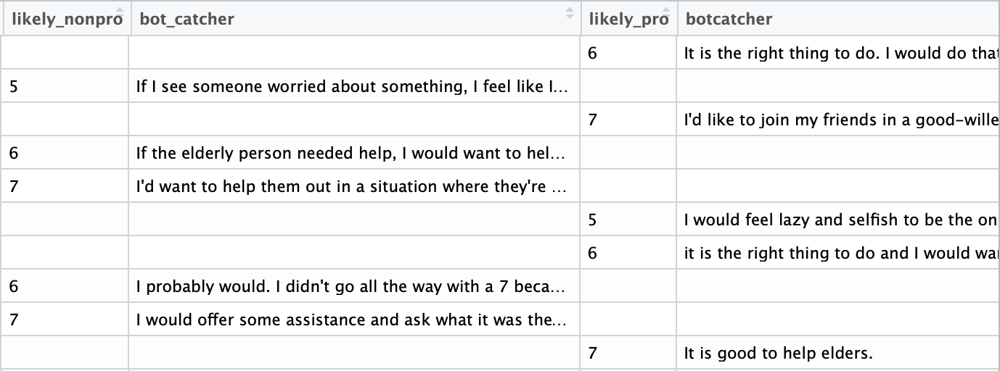

Step 4: Data Processing
Condensing cross-condition columns
We won't go into too much detail about this here, but any object (variable, dataframe, data cell, column, etc) in R has a data type. For example, let's say you look at a dataframe column and one of the cells has a value of 3. If it is a numeric data type, R will interpret it as the numerical quantity of 3. With numeric data types, you can perform mathematical operations like adding and subracting. If it is a character data type, R will interpret it as just the symbol "3" with no numeric value, as if it were a letter and will not be able to perform mathematical operations. But with character datatypes you can see if sequences of characters match each other or not.
In the next step, we're going to build new columns in our data frame on the condition of matching character sequences. So for now, let's convert all our data to the character data type:
Now let's take a quick look at some of the columns in our dataframe. The way we can tell the difference between data from participants in the "prosocial" vignette condition and participants in the "non-prosocial" vignette condition is that their data is in separate columns. So, in each of the response columns, rows where the subject belongs to the other condition, the cell is empty.
We'll take advantage of this to merge the columns. We take two steps:
Reverse coding scales
So we don't need to use this technique with this particular dataset, but we can still demonstrate it. You would use reverse coding if, in a scale with multiple questions, the answers for different questions that would be consistent with one another are in reverse order from one another.
For example, if one of your scale questions was "Do you feel positively about your career prospects?" and another was "Do you feel negatively about your career prospects?". For both questions, participants have to answer on a likert scale from 1 (strongly agree) to 5 (strongly disagree). If someone answered "1" to the first question and is answering consistently, we would expect them to answer "5" to the second question, but these scores will mathematically cancel one another out in our analyses. So we systemically recode people's answers to the second question so anyone who answered "1" is marked "5", who answered "2" is marked "4", is marked "3" stays the same", "4" is marked "2" and "5" is marked "1" so answers are consistent and we can later check the internal reliability of our scale (next step)
Creating a new column with a calculation
If you've used a Likert scale with multiple questions as the operationalization of one of your conepts in your study, you will likely need to summarize that data into a single statistic using some predetermined formula. Here, we'll just take the mean score of each subject's response to all the scale questions and put them in a new column. However, you can use the same strategy to perform other operations, like adding (+), subtracting (-), multiplying (*), dividing (/), exponents (base^exponent), and square roots (sqrt(base)), amongst others.
Checking internal reliability
Cronbach's alpha measures a scale's internal reliability, or how related the items in a scale are. It does this by measuriing how well each participant's answers to the scale prompts correlate with one another. So it's very important that you have reverse-coded any scale items that need it before performing this analysis, and that you use the reverse-coded columns in the code, not the original columns.
Reporting in APA format:
The [name of scale] was [not] found to be [highly] reliable (x items; α = ##).
Grouping variable levels & dummy coding
You may want to take a continuous variable and code it as a categorical variable for your analysis in order for it to make more intuitive sense. For example, here we collected participants' ages, but we would like to analyze our data based on age range rather than specific ages.
Conversely, some analyses may necessitate that categorical data be represented with numerical information. We do this by separating the data levels of a particular variable into separate, numerically represented data columns. In this example, we parse out the categorical age ranges we created with data grouping above into numerical dummy columns. Note that we're still representing the categories, not the specific ages of participants.